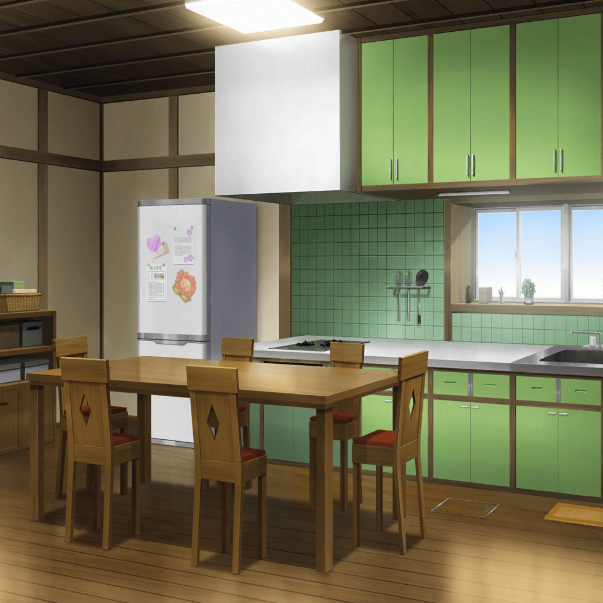
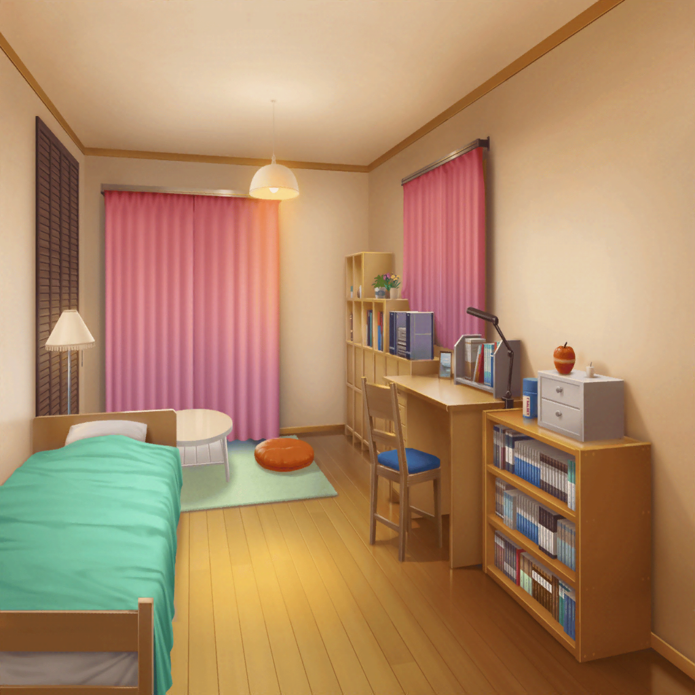

放課後
山吹家
沙綾の母
沙綾、今日はお友達何人来るの？
みんな、夕ごはん食べてく？
沙綾
そんな張り切らなくても大丈夫だって。
パンの試食もするし
純
ねーちゃんばっかズルい！
おれもパン食べたい！
紗南
さーなも食べたい！
沙綾
ごはん食べられなくなるよ。
ほら、ふたりとも宿題やった？
あとで見にいくから
純
えー、つまんないー
沙綾
……ごめんね。
最近、文化祭の準備で帰るの遅くて。
母さん、大丈夫？
沙綾の母
心配しすぎ。
お母さんもう全然平気だから。
ね、お父さんもいるんだし
沙綾の父
そうだぞ。
うちのことは気にしなくていいから、
沙綾は自分の好きなことやりな
沙綾
うん……
香澄
こんにちは〜！
沙綾の母
香澄ちゃん達来たみたいね。
ほら、出てあげて。文化祭♪ 文化祭♪
沙綾
もう、張り切らなくていいって

その夜
りみ
お邪魔しました
香澄
エプロンいい感じにできたね！
有咲
てか、このあとマジで山吹さんちに泊まってくのか、香澄？
香澄
うん、今夜は歌詞作りがんばる！
有咲
てか、山吹さんが付き合うことなくね？
香澄
だって、ひとりだと寝ちゃう……
沙綾
明日休みだし、うちは構わないから
香澄
ほんとにほんとにありがとう〜！
有咲
寝てたら叩き起こして
香澄
ええっ！？
沙綾
心配なら泊まればいいのに
有咲
泊まりとかっ、そんないきなり言われても……
香澄
なに緊張してんの？
有咲
うっせー！
私はそんな軽い女じゃないんだよ！ じゃあな！
りみ
あ、待って、有咲ちゃん
たえ
じゃあ、私達も行くね。
曲、完成したら送るから
香澄
有咲、枕が変わると眠れないのかな？
沙綾
あはは、市ヶ谷さん面白い

山吹家 沙綾の部屋
沙綾
市ヶ谷さんも牛込さんも、歌詞の案出してくれたんだって？
香澄
うん、２人の案をまとめて、私が歌詞にするんだ！
沙綾
へえ、責任重大だね
香澄
そうなんだー……
でも、がんばらないと！
沙綾
ふふ、あ、牛込さんのくれたメモ見て。
『香澄ちゃん、ファイト』って書いてある
香澄
うう、りみりん、嬉しいよ〜！
よーし、がんばるぞー！
香澄
うう、頭ぱんぱん〜
沙綾
あはは、ちょっと休憩しよっか
香澄
うん、あ、ねぇ？
ベランダから星見てもいい？
香澄
今日、星がよく見えるし！
星を見たら何か思い浮かぶかも！
沙綾
あはは、キラキラドキドキできるかもね

沙綾
……それで、いけそう？
香澄
うん、名曲の予感♪
沙綾
まだ歌詞も曲もできてないのに？
香澄
だって、みんないるから
香澄
最初はひとりでワーってなってたけど、
有咲とりみりんがいて、おたえも一緒で。
さーやも！
沙綾
……ドキドキできてる？
香澄
うん、ドキドキしてる！
みんなで歌って演奏したら、絶対キラキラだよ！
全部楽しい！ ワーって走りたい！
沙綾
いいじゃん、それを歌詞にすれば
沙綾
難しく考えないで、
そのまままっすぐ歌に込めたら伝わると思うよ
香澄
そうかなっ？
沙綾
うん、あとはみんなが整えてくれるよ
香澄
……あのね、ずっと考えてたんだけど、
さーやも一緒に文化祭で歌わない？
沙綾
え……？
香澄
文化祭、一回だけでも。
バンドに入るとかじゃなくていいから、
さーやと一緒に歌いたい！
沙綾
……すっごく楽しそう
香澄
うん！ 絶対に楽しいよ！
沙綾
……そうだね。
文化祭はわかんないけど、でも……
沙綾
いつか、いつかね
香澄
うん！ 約束！
沙綾
そういえば、バンド名は？
結局どうなったの？
香澄
ふっふっふ……

後日
花咲川女子学園 廊下
香澄
じゃーん、見て見て、さーや！
私達のバンドのチラシ、作ったんだー！
沙綾
へえ、文化祭のためにこんなのも用意したんだ。
あはは、このイラストかわいい
香澄
それはりみりんの力作だよっ！
りみ
えへへ、ありがとう〜
沙綾
ええと、バンド名は『Poppin'Party』？
香澄
それ、有咲が考えたんだよ！
有咲
山吹さんがいいって言ったから、一応提案しただけだし
沙綾
うん、香澄達にぴったりのいい名前
香澄
それと……メンバーのとこ見て
沙綾
……え？ 私の名前……？
香澄
さーやもメンバーだよ
沙綾
……！
香澄
よし、チラシ貼りがんばらなくっちゃ！
沙綾
………
？？？
沙綾
沙綾
ナツ……
夏希
なんか……久しぶり
って、同じ学校なのに変だけど
夏希
……そのチラシ、沙綾バンドやるの？
沙綾
えっ？
夏希
よかった。やる気になっ……
沙綾
やらない
夏希
！
沙綾
友達が勝手に書いちゃって……
ごめん